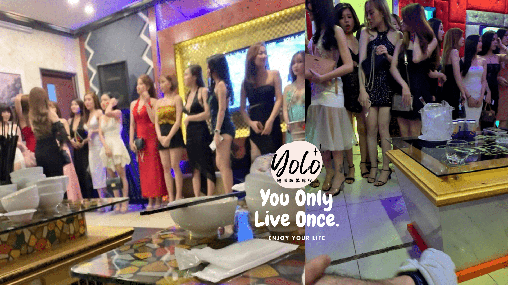
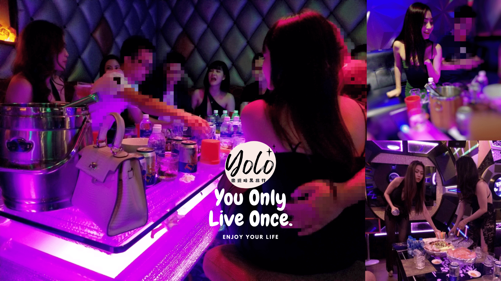
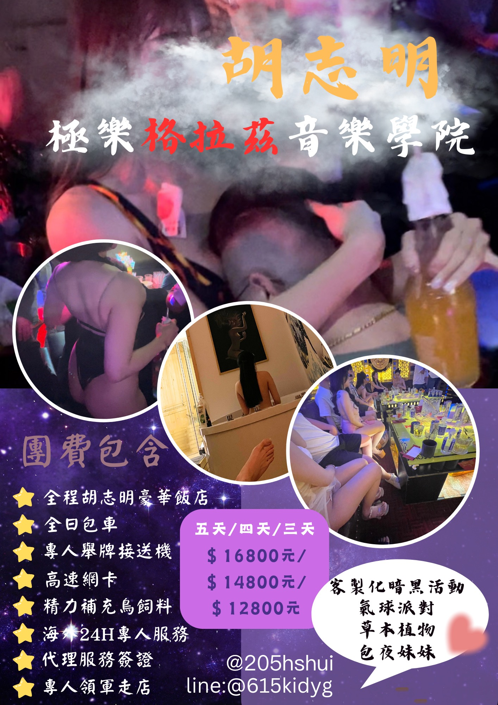
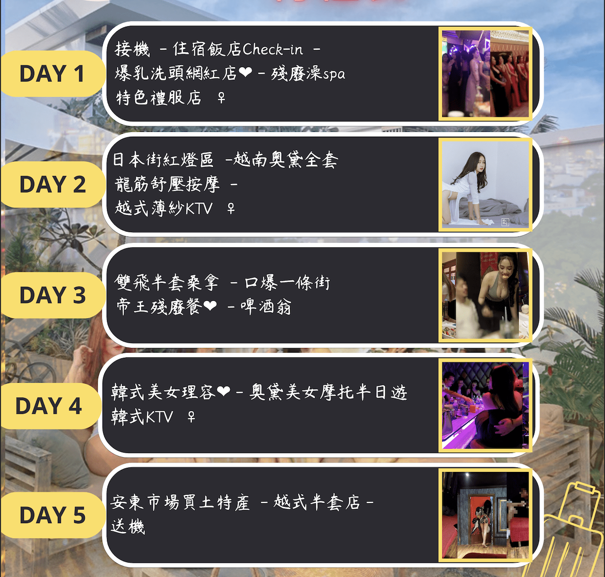

行程介紹
Beer Om 啤酒翁

樂遊推薦度 4/5
Beer
Om，就是啤酒抱的意思，邊抱妹妹邊和妹妹唱歌喝酒、玩色色的遊戲，才是這裡的真理，啤酒翁的消費水準比起其它店種來說更親民一些，雖然女孩的選擇比較少，環境也較簡陋，但是高性價比才是硬道理。妹子較沒有職業感，真性情的她們往往會與你一同在包廂內嗨炸
- 坐台小費 台幣650（50萬越盾）
- 出場短鐘 台幣3900 （300萬越盾）
- 出場過夜 台幣6500 （500萬越盾）
一般禮服店
樂遊推薦度4.5/5
禮服店的環境及女孩數量皆優於啤酒翁，會中文的妹妹比率較高，相對的平均消費也高點。適合初到胡志明的玩家，讓你快速熟悉越南的玩法！
- 坐台小費 台幣900（70萬越盾）
- 出場短鐘 台幣4600（350萬越盾）
- 出場過夜 台幣7300（550萬越盾）
高級禮服店

樂遊推薦度4.5/5
相對於其他類型KTV，價位較高，但是它提供的服務及享受同樣對得起這個價格的，這裡常有許多兼職妹子，以流暢的中英文和滿滿的女友Fu，撩動著許多玩家們的心弦。
- 坐台小費 台幣930 (70萬越盾)
- 出場短鐘 台幣5300(400萬越盾)
- 出場過夜 台幣8600 (650萬越盾)
薄紗店
樂遊推薦度4.5/5
越南特色薄紗KTV，妹子僅穿著清透薄紗，用若隱若現的致命誘惑，挑逗你最深處的慾望，如果你喜歡，妹子甚至能為你來一段專屬的激情秀舞，來這裡解放你所有的渴望吧。
- 坐台小費 台幣900（70萬越盾）
- 脫衣秀舞 台幣650（50萬越盾）
- 出場短鐘 台幣5200（400萬越盾）
- 出場過夜 台幣8100（620萬越盾）
韓式KTV
樂遊推薦度4/5
顧名思義是服務韓國客人為主的KTV，韓式規矩套餐制，預算好控制，環境一般也較為簡陋，這邊的妹妹大多是剛入行或短期兼職，有時能挖到寶，這裡的優點是妹子不甩態，且全店皆為鎖台制，但缺點是幾乎沒有會中文的妹妹，對於華人常玩的骰子遊戲也幾乎不會，適合想挑戰自己嘗鮮的玩家
- 坐台小費 台幣650（50萬越盾）
- 出場短鐘 台幣3000（220萬越盾）
- 出場過夜 台幣5300（400萬越盾）
日式KTV
樂遊推薦度3.5/5
主要集中在日本街，服務的客群也多為日本人，在這裡的妹子因受日式管理影響，非常乖巧以及溫柔，與普遍越南妹子的熱情相比，亦有一種不同的風情。想體驗一把極致的日式服務嗎，日式KTV會是你不錯的選擇!
- 坐檯小費 台幣650（50萬越盾）
- 出場短鐘 台幣4600（350萬越盾）
- 出場過夜 台幣7300（550萬越盾）
奧黛美女BAR
奧黛就是所謂的越式旗袍，類似旗袍的開高衩剪裁，卻又帶著南洋風的清透，修身的設計能完全襯托出妹子曼妙的身材，勾起你無窮的佔有欲，在這復古風的酒吧裡，就有著許許多多身著奧黛的妹子等你來找她們喝喝酒、談談風月，店內也有撞球檯能與美女同樂。
- 坐台小費 台幣650 (50萬越盾)
- 出場短鐘 台幣4000 (300萬越盾)
- 出場過夜 台幣8000 (600萬越盾)
夜店Club
樂遊推薦度4/5
狩獵時間
在全越南這最自由開放的胡志明市內，有著許許多多的夜店、Club，在這裏面每晚都匯聚了各式各樣的人來這裡放縱、更是有許多妹子下班後來這裡享受著酒精及音樂，如果你對自己的外表有自信的話，說不定你也能在這裡上演一場不談錢的異國豔遇喔!
洋人街GO GO BAR
樂遊推薦度3/5
東南亞最常見的的洋人街及GO GO
BAR，胡志明市當然也不能免俗的有著屬於自己的洋人酒吧街，但是這裡的GO
GO
BAR，相較於周邊的泰國及菲律賓，就沒有那麼開放了，但是在BAR裡，喝喝酒、獵獵艷，挑個心儀的妹子聊聊天吃吃豆腐，也別有一番風味。普遍來說，越晚妹子願意跟你出去過夜的機率就越高，同時也別忘了請她喝個LADY
DRINK啊
- 出場短鐘 台幣3900（300萬越盾）
- 出場過夜 台幣6500（500萬越盾）
爆乳殘廢餐廳
樂遊推薦度3.5/5
所謂殘廢餐，就是眼睛吃著冰淇淋、頭靠著"乳枕"，雙手只需要放在它該放的位置，其它的一切就由妹子為你服務就行了，從進這間餐廳一直到飽餐離開，你甚至不需要碰到餐具，讓你實實在在的體驗一回"殘廢"的快樂。
- 單點式，均消約40~60萬/人
- 美女服務生小費50萬
半套桑拿按摩(單人/雙飛/四人八手聯彈)
樂遊推薦度4.5/5
獨立包間內備有個人蒸汽桑拿、烤箱等設備可以使用，為你仔細的洗殘廢澡及全脫不回穿是它一貫的服務品質，不只是注重口技的部分，按摩也是不會輕易帶過的，一邊撫弄妹子的雪乳和濕漉的妹妹一邊享受女孩的樂器吹奏服務，全身心讓你體會到身為男人的快樂，甚至還有機會解鎖口爆和毒龍鑽的暗黑驚喜！
日式半套按摩
樂遊推薦度4/5
高級新穎的環境，配合著身著日式齊B小浴衣的美女技師，相信我，從踏進來的那刻起，你的眼球一定離不開技師那兩顆掉出來的屁股蛋了。
烤箱及按摩浴缸是基本的，如果你有興趣，也能升級成與妹子共洗鴛鴦浴的特別按摩，如此極樂的享受，讓你流連忘返。
越式短打店
樂遊推薦度3/5
標準化服務，基本上就是挑完妹子，進房後簡單的清潔，就開始操課止癢了，適合那些身體強壯，需求旺盛的刺槍達人。
奧黛全套按摩
樂遊推薦度4.5/5
看著身穿傳統服飾奧黛的妹子們，笑容滿面的拉著你的手，喊著"瑪莎瑪莎"，這，就是日本街最迷人的光景，每個來越南的男人，難道都不該達成一個奧黛妹子體驗成就嗎?
辣妹理容按摩
樂遊推薦度3.5/5
既然來到越南呢，那Youtube上流傳甚廣的辣妹理容一定是不能錯過了!妹子排排站讓你選完後，就帶去你體驗越式的清涼洗頭理容，幫你洗去南越的燥熱，結束後再上樓幫你全身按摩，同時這也是你的大好機會去展現撩妹功力，這裡的妹子雖說都是良家，但是在越南這個神奇的國度，什麼事都是有可能發生的！
Close
行程介紹
古芝地道一日遊
如果你是一個軍事迷、歷史控，那你一定不能錯過知名的古芝地道，且看作為世界上極少數打贏美國大兵的越南人，如何堅忍卓絕，建構出一個幅員數百公里的地下城市，並以此打得美軍落荒而逃!這裡除了參觀地道及陷阱、軍事遺跡外，也能在靶場購買子彈打靶重溫軍旅回憶，在結束參觀地道後，古芝特產的牛肉料理亦是值得去品嘗看看的!
美托市-湄公河跳島一日遊
距離胡志明市西南方約一個半小時的美托市，是湄公河三角洲的路口城市，這裡除了盛產各種熱帶水果外，最負盛名的就是湄公河之旅了，乘坐客船，朝著河中沙洲麒麟島及鳳島出發吧!到了島上除了能參觀島上蜂農品嘗純正蜂蜜茶外，也能欣賞到南越地區傳統民俗表演，甚至你還可以買支釣竿試試手氣，看能不能釣上一隻鱷魚，最後，乘坐著小划船沿著島上運河，從另一個角度感受東南亞的母親之河-湄公河之美。
胡志明市區觀光(自費)
胡志明市過去稱為～西貢SAIGON，是東南亞最璀燦的東方明珠，越戰結束後更名為－胡志明市。有東方小巴黎之稱的【胡志明市】也是出入越南最大主要門戶及商業大城。十八世紀時在法國人經營殖民下，生活習慣深受影響，市容更是十足
的法國風味。殖民地風格建築的洋房，飄溢著異國風情的街道，漫步其中細細探著，隨手可得知性與感性的收獲!不知不覺中~沉浸在城市的文青優雅與熱鬧多變的氛圍，讓人慢慢戀上這萬象之都的美麗風華………
-
推薦景點:中央郵局、咖啡公寓、金融塔(史塔克大樓)、紅教堂、戰爭遺跡博物館、檳城市場、統一宮、西貢遊河船餐、沙灘咖啡…等
1.BITEXCO Financial Tower金融塔高空觀景台夜景
在西貢市區，一身優雅銀色外表的高聳建築物，代表著越南的經濟成長快速，邁向先進及跟著全球性的腳步，莫過於BITEXCO
Financial Tower金融塔。BITEXCO Financial
Tower金融塔設計以越南國花：荷花為概念，是一朵還未怒放的形狀，總高近300米包括68層，總面積10萬多平方米。建設開始於2007年，並於2010年10月31日開放。金融塔為商辦大樓：購物商場、電影院、餐廳、會議室還有高塔觀景台，是一複合式商業大樓也是吸引全世界前來西貢旅遊的觀光客朝聖的最佳高度。
2.新定教堂（又稱：粉紅教堂Tan Dinh Church）
夢幻般的糖果粉紅色教堂，是胡志明市第二大天主教教堂。法國殖民越南時，所建的一間天主教教堂，建於1876年，因此距離現在已有一百多年的歷史。而粉紅色外牆，據說是在1957年才漆上的，迷人的粉紅色，加上融合羅馬、哥德、文藝復興的建築元素，讓它猶如來自童話世界的夢幻城堡，唯美夢幻的氛圍吸引了不少新人選擇這裡作為婚紗照拍攝的場景。
3.市政廳、阮惠街步行區
是市中心最繁華的街道，玻璃帷幕高樓林立左右，酒店與各式餐館也穿插其中，起點是市政廳及胡志明廣場走到底就到西貢河畔，這條街是到訪胡志明必去之地，每整點就會有水舞表演，這裡每天晚上七點以後封街成為行人徒步區，廣場人群更是各色各樣，晚上的時候有年輕人聚集聊天或表演，也是胡志明市民假日休閒的最佳去處。
4.咖啡公寓The Cafe Apartment
一整棟樓滿滿的都是咖啡館，安排品嚐越南咖啡，坐個陽台或是靠窗的位子，好好欣賞胡志明市新舊文化共存的街景。建於20世紀中期的老宅，2015年才改造成咖啡公寓，保留先前政府和軍事人員居住的痕跡，再依照駐入店家的風格賦予不同面貌，總共十層樓，特別推薦先從外觀欣賞這棟建築，可以一目瞭然每家咖啡廳的陽台，無論是白天還是晚上看都是格外特別的景色。
5.紅教堂
有胡志明市地標之稱的－紅教堂，位於第一郡。建於1877~1883年間，因其以磚紅的外觀而得名。建築棌新羅馬式風格，正面有兩座高達40米的方形尖塔，前面的廣場上有尊聖母像。參觀時若正面大門深鎖，可由側門進入，值得一看。此地為越南在法國殖民時期所留下來，最具特色的建築，在此可拍團體照留念。
6.LANDMARK81 越南第一高樓
位於胡志明市東區平盛郡，近西貢河，為綜合商業大樓，設有服務式公寓、飯店、商店、購物中心、觀景走廊與屋頂花園等，為越南最先進的建築之一。
大樓高461.3公尺，超過河內336公尺高的Landmark72與胡志明市高269公尺的第3高建築Bitexco金融塔，成為越南新的經濟成長象徵。
7.檳城市場(Ben Thanh Market)
「檳城市場」坐落在胡志明的市中心。於1914年啟用，為胡志明市最大的室內傳統市場，共有東、西、南、北門四個入口，這棟建築物最特殊的地方就是市場外的圓型廣場上佇立著一個大鐘，而緊鄰圓環的這個南門是最主要的地標之一。此一市場佔地超過一萬平方公尺。越南百姓和國際遊客對胡志明檳城市場都非常熱衷，是旅遊必到之地。
檳城市場每日都是熱鬧非凡，人來人往。在這裡可以買到各種商品，市場內外都有不少餐館和小吃攤，出售的越南小吃味道正宗，價格低廉。在Ben
Thanh市場北側（背面）還有幾家商店由BenThanh集團管理，以固定價格出售產品，比市場中的貨攤還要便宜，不需討價還價。如果還不滿意的話，周圍還有許多街邊商店或者等待夜晚市開市，都可以滿足你購物的需求。
8.獨立宮
佔地12萬平方米，最初為1868年法國總督的宮殿，後轉為南越政府的總統府，當時又稱為「統一府」。1975年4月30日，北越解放軍的戰車長驅直入，插上解放軍的旗幟，這標誌著漫長的越南內戰終告結束。越戰結束後改稱為「統一府」，內部的設置和擺設仍保持攻入當天的樣子。
Close
住宿介紹
為提供團友優質旅遊體驗，全程安排團友入住市中心豪華4星酒店，安全性、舒適度全面提升，讓您以及每晚的女孩皆能安心入住，盡情享受性福
!
樂遊亦提供酒店代訂服務，凡透過樂遊代訂特約酒店，皆保證能攜帶女孩一同入住，並包含雙人早餐，適合公司出差、有報帳需求的貴賓。
注意 :
越南當地法令要求外籍男士與越南女性不得同住一間房，否則酒店方有權謝絕入住；樂遊與特約酒店皆已打通好關係，如是以個人名義訂房即有可能被加收高額過路費甚至拒絕女孩入住。
★★★ The Luxe Hotel 盧克森酒店
| 房型 |
價格(每晚) |
面積 |
景觀 |
備註 |
| 標準房 |
新台幣 1450 元/人民幣 330 元 |
20平方公尺 |
無窗 |
全區禁菸 |
| 標準房 |
新台幣 1650 元/人民幣 380 元 |
22平方公尺 |
有窗/市景 |
全區禁菸 |
| 豪華房 |
新台幣 1950 元/人民幣 450 元 |
25平方公尺 |
有窗/市景 |
全區禁菸 |
★★★ Sunrise Central Hotel 日出中心酒店
| 房型 |
價格(每晚) |
面積 |
景觀 |
備註 |
| 標準房(無窗) |
新台幣 1500 元/人民幣 340 元 |
22平方公尺 |
無窗 |
全區禁菸 |
| 豪華房 - 帶窗 |
新台幣 1800 元/人民幣 410 元 |
26平方公尺 |
有窗 |
全區禁菸 |
| 行政房 |
新台幣 2250 元/人民幣 520 元 |
28平方公尺 |
有窗/市景 |
全區禁菸 |
★★★☆ Blue Diamond Laxury Boutique Hotel藍鑽奢華精品酒店
| 房型 |
價格(每晚) |
面積 |
景觀 |
備註 |
| 標準房 |
新台幣 1750 元/人民幣 400 元 |
26平方公尺 |
通風小窗 |
全區禁菸 |
| 升級房 |
新台幣 2000 元/人民幣 460 元 |
28平方公尺 |
有窗 |
全區禁菸 |
| 豪華房 |
新台幣 2450 元/人民幣 565 元 |
32平方公尺 |
有窗/市景 |
全區禁菸 |
| 行政房 |
新台幣 2950 元/人民幣 675 元 |
35平方公尺 |
有窗/市景 |
全區禁菸 |
★★★☆ Sunflower Laxury Hotel 向日葵奢華酒店
| 房型 |
價格(每晚) |
面積 |
景觀 |
備註 |
| 標準房 |
新台幣 1850 元/人民幣 425 元 |
22平方公尺 |
無窗 |
全區禁菸 |
| 豪華房 |
新台幣 2200 元/人民幣 505 元 |
27平方公尺 |
有窗 |
全區禁菸 |
| 行政房 |
新台幣 2700 元/人民幣 630 元 |
30平方公尺 |
陽台房 |
可吸菸 |
| 樂遊團友禮遇可提前入住、延後退房 |
★★★☆ The Hammock Hotel Fine Arts Museum翰墨客美術館酒店
| 房型 |
價格(每晚) |
面積 |
景觀 |
備註 |
| 標準房 |
新台幣 2650 元/人民幣 610 元 |
20平方公尺 |
有窗/市景 |
全區禁菸 |
| 豪華房 |
新台幣 3050 元/人民幣 705 元 |
24平方公尺 |
有窗/市景 |
全區禁菸 |
|
備註:住宿此飯店可免費無限享用房內迷你吧及大廳禮賓飲食
|
★★★★ Oakwood Boutique Apartments 橡樹園精品公寓
| 房型 |
價格(每晚) |
面積 |
景觀 |
備註 |
| 高級一室套房 |
新台幣 2850 元/人民幣 655 元 |
33平方公尺 |
有窗/市景 |
|
| 豪華一室套房 |
新台幣 3250 元/人民幣 750 元 |
39平方公尺 |
有窗/市景 |
|
| 行政兩室套房 |
新台幣 4650 元/人民幣 1075 元 |
60平方公尺 |
有窗/市景 |
|
★★★★ Silverland Sakyo Hotel & Spa銀色大地左京水療酒店
| 房型 |
價格(每晚) |
面積 |
景觀 |
備註 |
| 標準房 |
新台幣 3350 元/人民幣 770 元 |
26平方公尺 |
有窗/市景 |
部分吸菸房 |
| 市景房 |
新台幣 3850 元/人民幣 880 元 |
28平方公尺 |
有窗/市景 |
部分吸菸房 |
| 行政房 |
新台幣 4650 元/人民幣 1055 元 |
34平方公尺 |
有窗/市景 |
部分吸菸房 |
Close
參團方案

出團日期說明
樂遊在地深耕服務，每天都有成團，方便團友出行排假，詳細出團時間可至Telegram電報群及官方Line@查閱或是直接詢問客服
-
凡報名自組三人以上可以自訂出團時間(必要時仍會安排其他團員一同玩樂，惟不超過每團人數上限六位，如需鎖團服務請於報名時告知客服人員)
詳細出團日期 Line搜尋官方帳號 :
@205hshui
或
@615kidyg
團費定價及團費包含內容(每人台幣價格)
*團費不含機票、簽證、護照、餐食、娛樂費用，參團可協助代辦機票、簽證，請於報名時告知
團費訂價(皆為台幣定價，美金金額除以30，港幣除以4，人民幣除以4.5)
| 日程 |
價格 |
| 五天四夜 |
16,800 |
| 四天三夜 |
14,800 |
| 三天兩夜 |
12,800 |
團費包含內容
| 安心住宿 |
全程入住胡志明豪華4星飯店，打點好關係確保女孩能一同入住
|
| 專屬管家 |
專業的暗黑旅遊管家，全方位的貼心服務，不論是白天行程或是夜場氣氛，都能給予你最適切的幫助，讓你玩得舒心愉快。
|
| 機場接送 |
安排專人專車接送機，避免誤搭機場高價黑車之情形。 |
| 全程包車 |
採用高級大型保母車，提供您舒適旅遊體驗。 |
| 高速網卡 |
使用越南最大電信商Viettel，全程5G超高穩定網速。 |
| 旅遊保險 |
台灣地區出發團友贈旅遊不便險，讓你安心出行。 |
| 天然補品 |
特別準備天然男性專用補品，給你滿滿的戰鬥力及續航力。
|
| 優質旅遊 |
有別於業界為追求利潤無限收人的做法，樂遊旅遊每團人數上限最多六人，以確保提供最優質的服務及旅遊體驗。
|
換匯建議
-
攜帶自己母國貨幣去越南當地換匯即可，管家會帶你去匯率好的匯所換錢
-
切記不要於國內的機場或銀行先行換匯，匯率較越南當地差非常多
-
樂遊會員提供會員專享優匯，國內匯款，即刻提現越盾，匯率更優於當地銀樓

Close
出行Q&A
出團日期說明
樂遊在地深耕服務，每天都有成團，方便團友出行排假，詳細出團時間可看下方出團時刻表或是至Telegram電報群及官方Line@查閱
詳細出團日期 Line搜尋官方帳號 : @888yyknv 或電報群加入
@Yolotravel888
每日行程
樂遊旅行為客製化服務，報名參團後，將於出發日前兩周邀請團友及該團服務管家開群討論，依照該團團友的習慣、興趣、愛好以及預算，以及當地最新娛樂現況，擬定出一份最合適的專屬行程表.
每團人數上限？
樂遊旅遊為確保提供高品質服務，每團上限只服務六位團友，以避免出現像其它暗黑旅遊團一位管家要服務眾多團友導致忙不過來或是人多互相搶女孩的情形。
能不能單兵參團？
一人單兵參團的團友完全不用擔心，根據樂遊服務多年的經驗，單兵參加暗黑團的比例其實非常高，樂遊的管家有專業服務經驗，能照顧到所有參團團員的需求，並迅速讓來自各地的團友彼此熟悉，讓你過來時是單兵，回去時就多了許多的好戰友。
不喝酒的玩家適合參團嗎？
完全沒有問題，胡志明作為一個娛樂產業健全的不夜城，樂遊的管家總能找到適合你的玩法，另外去KTV其實是為了有一個環境讓你親自選妃挑妹子，並在接下來的互動中熟悉彼此，談一場專屬於你的小戀曲。
娛樂及餐食消費怎麼算？
娛樂部分：日間娛樂行程依照個人選擇自行負擔，夜場KTV部分，管家會替團友檢查帳單內容，確認所有品項及價格都是合理的，經團友確認無誤後，再加上給媽咪及服務生的小費，除以當晚團友人數，大家AA制。
餐食部分：個人套餐式餐點自行負擔、部分桌菜式(如殘廢餐)，則為AA制
一定要參團嗎？能不能自由行？
其實參團及自由行各自有各自的優點，參團為的就是讓團友無需動腦就能享受到高品質的旅遊體驗，食衣住行娛樂都有管家替你安排的好好的，每天只需要煩惱今天要出水幾次、會不會破皮~？
另外因為是娛樂性質的關係，若是毫無經驗就採以自由行的方式，很容易就被店家給敲盤子坑騙，所以樂遊建議至少讓我們替大家服務一次，熟悉當地為之後可能的自由行做準備。
管家團隊
樂遊的管家群有台灣人、香港人、越南華僑，皆受過專業服務訓練並熟捻當地娛樂現況。
換匯問題
管家會於團友抵達時，帶團友至當地匯率最佳的銀樓換匯所換錢，因越南貨幣非國際強勢貨幣，提醒各位團友盡量避免在國內或是機場換匯，另外亦無需提前換美金，只需要直接帶母國貨幣來換匯即可。
樂遊旅遊四大服務保證
-
全程消費透明公開 :
參團期間，管家會為團員紀錄所有公用消費，帳單明細都能公開給團友檢視並拍照存檔，讓你玩得安心。
-
保證所有消費絕無加價灌水 :
所有店家消費價目皆為實際價格，絕無灌水，甚至部分店家提供給樂遊團友優惠價並服務升級，如發現參團消費價高於自行消費，只要提出證明就退三倍價差。
-
保證提供優異旅遊品質 :
樂遊旅遊專注於提供高品質旅遊體驗，傾聽你的需求，重視你的每一個意見，旗下所有管家皆能專業給予最適切的服務。
-
保證不滿意全額退費 :
您於行程中如果感覺到任何不滿意的地方，隨時都能向承辦人員或是管家反應，如經查確實為我們的疏失，無理由全額退費，樂遊始終堅持給您最完美的服務品質。
Close